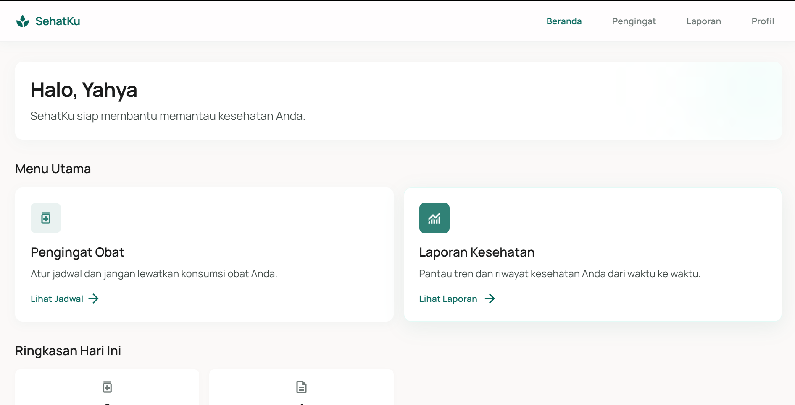
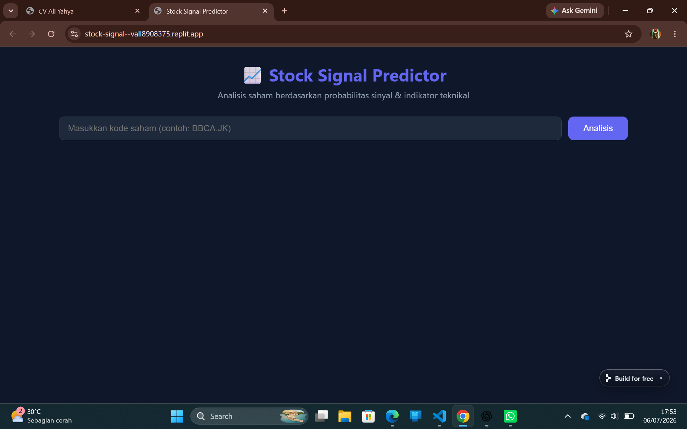
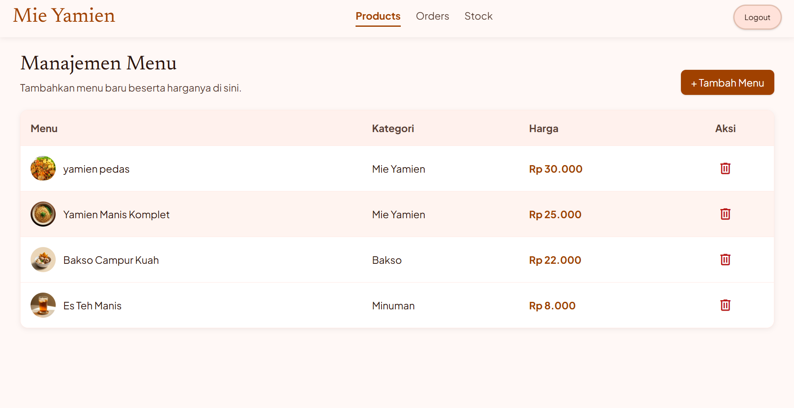

Hallo, nama saya Yahya
Mahasiswa Teknik Informatika dengan minat pada bidang Artificial Intelligence, Computer Vision, Machine Learning, dan Data Mining. Berpengalaman mengembangkan model klasifikasi citra menggunakan Python dan Google Colab dalam penelitian mengenai pengaruh teknik preprocessing terhadap performa model deep learning. Terbiasa melakukan pengolahan data, evaluasi model, serta analisis hasil eksperimen. Memiliki kemampuan berpikir analitis, problem solving, serta mampu bekerja secara individu maupun dalam tim.
About Me
Education

Stmik ikmi
S1 Teknik Informatika (2024 - sekarang)
Mahasiswa Program Studi Teknik Informatika STMIK IKMI yang saat ini menempuh semester 5. Memiliki prestasi akademik yang baik dengan Indeks Prestasi Kumulatif (IPK) 3,71 hingga semester 4, yang mencerminkan komitmen, kedisiplinan, dan konsistensi dalam mengikuti proses pembelajaran.
Skills
Menggabungkan kreativitas dan teknologi untuk hasil yang presisi.
Python
Mengembangkan solusi berbasis Python yang efisien, terstruktur, dan mudah dipelihara, dengan fokus pada performa, skalabilitas, dan kebutuhan pengguna.
Frontend Development
Implementasi desain pixel-perfect menggunakan teknologi modern.
Strategy
Perencanaan produk digital strategis.
Branding
Identitas visual yang kuat dan konsisten.
Projects

SehatKu - Pemantau Kesehatan & Pengingat Obat
Latar Belakang: Memudahkan pengguna dalam mencatat riwayat kesehatan dan jadwal minum obat secara terpusat.
Solusi: Mengembangkan web interaktif menggunakan Next.js dan Supabase, serta mem-build-nya menjadi aplikasi Android (APK) terintegrasi via WebView.
Lihat
Stock Signal Prediction
Latar Belakang: Memudahkan pengguna dalam menganalisis sebuah saham.
Solusi: Membuat web untuk melakukan Analisis dan prediksi harga sebuah saham yang ada di indonesia dengan menggunakan model regresi linear.
Lihat
Aplikasi Kasir Yamien
Latar Belakang: Kedai membutuhkan sistem pencatatan pesanan dan transaksi pembayaran yang cepat, terpusat, dan akurat.
Solusi: Membangun aplikasi Point of Sale (POS) berbasis web untuk mengelola daftar pesanan dan mempermudah proses transaksi di meja kasir.
LihatContact
Alamat Domisili
Jl. Jenderal Sudirman No.199
Kota Cirebon, Jawa Barat